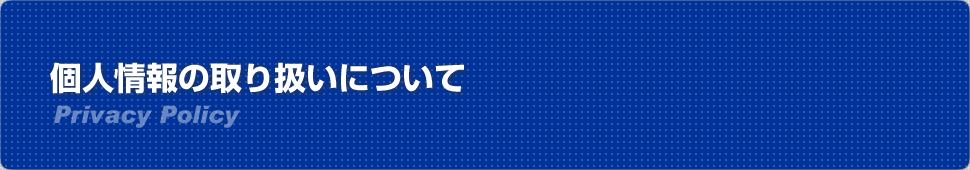

<?php
require_once 'include/header.php';

$header_obj = new Header();

$header_obj->fncFacebookMeta_function=true;

$header_obj->title_page='個人情報の取り扱い';
$header_obj->description_page='日本ワーキングホリデー（ワーホリ）協会では皆様からお預かりしている個人情報を厳重に取り扱っています。ワーキングホリデー（ワーホリ）協定国の最新のビザ取得方法や渡航情報などを発信しています。また、ワーキングホリデー（ワーホリ）をされる方向けの各種無料セミナーを開催しています。オーストラリア、ニュージーランド、カナダ、韓国、フランス、ドイツ、イギリス、アイルランド、デンマーク、台湾、香港でワーキングホリデー（ワーホリ）ビザの取得が可能です。ワーキングホリデー（ワーホリ）ビザ以外に学生ビザでの留学などもお手伝い可能です。';

$header_obj->fncMenuHead_imghtml = '';
$header_obj->fncMenuHead_h1text = '個人情報の取り扱い　（プライバシーポリシー）';

$header_obj->display_header();
?>
	<div id="maincontent">
	  <?php echo $header_obj->breadcrumbs(); ?>
	  <h2 class="sec-title">個人情報保護方針（プライバシーポリシー）、メンバー規約</h2>
	  <h3 class="h3-01">プライバシーポリシー</h3>
	  <p class="text01">一般社団法人日本ワーキング・ホリデー協会（以下、当協会という）では、ワーキングホリデー制度の運営及び各種手続きを行うにあたり、様々な個人情報をお預かりしております。<br />
当協会は、そのお預かりしている個人情報を、最も大切な資産の一つとし、その保護・管理を協会活動の最重要事項として大切に取り扱うこととしています。具体的には、下記の通り個人情報保護に関する方針を定め、職員全員に周知徹底し、皆さまの個人情報の適切な取扱い・管理をお約束します。<br/>
	&nbsp;<br/>
	また、当協会が管理するＷＥＢサイトでは、ブラウザのCookie（クッキー）を利用してお客様の行動をトラッキングしています。これらの情報は以下の利用目的に基づく範囲で利用しておりますが、この機能はCookie（クッキー）を無効にすることで収集を拒否することが出来ますので、お使いのブラウザの設定をご確認ください。<br/>
	なお、ご利用のブラウザでCookie（クッキー）を無効にすることなく、当協会のＷＥＢサイトをご利用された場合、トラッキング情報の利用に同意したものとみなします。<br/>
	&nbsp;<br/>
	この個人情報の取り扱い（プライバシーポリシー）が日本語以外の言語に翻訳され掲載される場合がありますが、日本語版とその他の言語版で相違や矛盾が発生する場合、日本語版が優先するものとします。
	</p>
      <div id="pp">
	    <h4>１．個人情報の定義</h4>
		<p>個人情報とは個人に関する情報であり、住所、氏名、生年月日、メールアドレスまたはサイトへのアクセス記録により、その個人を識別できるものをさします。当該情報だけではなく、他の情報との照合によって判別できる情報も含まれます。 </p>
		<h4>２．個人情報の利用目的</h4>
		<p>当協会では事業遂行上、必要な個人情報を適正かつ公正な手段で取得しますが、これらの個人情報は明確に使用目的を限定し、厳正に管理します。また、業務を円滑に進めるため業務の一部を委託し、この業務委託先に対して必要な個人情報を提供することがありますが、当協会はこれら業務委託先との間で取扱いに関する契約締結をはじめ、適切な監督を行います。当協会が取得する個人情報は以下の目的で利用します。</p>
		<p>（利用目的）</p>
		  <ul>
		    <li>セミナー・語学講座等のイベント案内、商品・サービスの情報や宣伝物等の提供</li>
			<li>セミナー・講座等の実施に際して、セミナー・講座等の実施者に対する予約者及び参加者情報の提示</li>
			<li>当協会提供のサービスやシステムの保守・サポート</li>
			<li>各種事業に関するマーケティングや調査、お客様からのお問合せへの回答</li>
			<li>ＷＥＢページやメールでの広告表示・情報提供</li>
			<li>職業紹介事業における求職者、求人企業への情報提供と付随する業務</li>
			<li>その他、お客様との取引・契約を適切かつ円滑に履行するため</li>
		  </ul>
		<h4>３．個人情報の利用に関する免責事項</h4>
		<p>当協会では、以下の場合を除き、本人の同意なく第三者に個人データを提供しません。</p>
		<ul>
		    <li>法令に基づく場合</li>
			<li>人の生命、身体又は財産を保護するにあたり、本人の同意を得ることが困難であるとき</li>
			<li>当協会からお客様へ情報提供を行う際、郵送物の配達業務または情報の配信を委託する場合で、必要と思われる組織・団体に対して個人情報の提供を行うとき</li>
	    </ul>
		<h4>４．個人情報の安全管理措置</h4>
		<p>当協会は、取扱う個人データの漏洩、滅失または毀損の防止その他の個人データの安全管理のため、十分なセキュリティ対策を講じるとともに、利用目的の達成に必要とされる正確性・最新性を確保するために適切な措置を講じています。</p>
		<h4>５．個人情報保護法に基づく保有個人データの開示、訂正等、利用停止など</h4>
		<p>個人情報保護法に基づく保有個人データに関する開示、訂正等または利用停止などに関するご請求については、ご本人であることを確認させていただいた上、速やかに対応させていただきます。</p>
		<h4>６．法令等の遵守</h4>
		<p>当協会は、個人情報の保護に関する法律（個人情報保護法）その他の関連法令および関係官庁のガイドライン等を遵守します。</p>
		<h4>７．見直し・改善</h4>
		<p>当協会の個人情報の取扱いおよび安全管理に係る適切な措置については、適宜見直し、改善いたします。</p>
		<h4>８．お問い合わせ・ご相談・苦情へのご対応</h4>
		<p>当協会は、個人情報の取扱いに関する苦情・ご相談に迅速にご対応いたします。ご連絡先は下記のお問い合わせ窓口となります。なお、ご照会者がご本人であることを確認させていただいた上で、ご対応させていただきますので、あらかじめご了承願います。</p>
		<p>【団体名】 	　〔 一般社団法人 日本ワーキング・ホリデー協会 〕<br />
		  【所在地】 　	〔 〒160-0023 東京都新宿区西新宿1-3-3 品川ステーションビル新宿5階507 〕<br />
	    【電話番号】 	〔 03-6304-5858 〕</p>
		<h3 id="memberkiyaku" class="h3-01">メンバー規約</h3>
		<h4>第１条（メンバー登録）</h4>
		<p>当協会の活動内容・趣旨を理解し、ワーキング・ホリデー制度に興味を持ち、海外体験によって自分自身のキャリアアップを図ろうと考えている者、ワーキング・ホリデー制度を利用して渡航を準備している者、及び帰国後就職を希望している者等をメンバー登録の対象とする。<br />
		ワーキング・ホリデーで来日している外国人については、別途定める。</p>
		<h4>第２条（メンバー情報の届出）</h4>
		<p>メンバー登録時に必要な氏名・連絡先等の事項を当協会に届出る必要がある。また、これら当協会に届け出た事項に変更があった場合は、当協会に延滞なく届け出るもとのする。</p>
		<h4>第３条（有効期間）</h4>
		<p>メンバー資格の有効期間は、資格を得てから3年間とする。引き続きワーキング・ホリデーを利用する際のメンバー更新の有効期間は更新後2年間とする。</p>
		<h4>第４条（登録料）</h4>
		<p>メンバー登録料は5,000円とする。更新料は2,000円とする。</p>
		<h4>第５条（メンバー登録の取り消しと登録料の返金）</h4>
		<p>
		当協会のセミナー、個別相談（カウンセリング）等のサービス提供前の場合は、メンバー登録の取り消しを可能としメンバー登録料を全額返金する。
		但し、登録料の支払日より60日経過した場合、納入した登録料は、理由の如何を問わず返金しない。
		また、メンバー都合によるメンバー登録取り消しに際し、登録料の返金手数料（銀行振込手数料など）が発生する場合はメンバーの負担とする。
		</p>
		<h4>第６条（メンバーズカード）</h4>
		<p>登録した者にメンバーズカードを発行する。これをもって「一般社団法人 日本ワーキング・ホリデー協会メンバー」とする。メンバーズカードは本人のみ有効で、ワーキング・ホリデー中は常時携帯する。第三者に譲渡又は貸与することは出来ず、かつこの場合効力は失われる。メンバーズカードを紛失、盗難にあった場合には、直ちに協会に連絡する。</p>
		<h4>第７条（再発行）</h4>
		<p>メンバーズカードを失った場合、再発行することができるが、再発行料は、1,000円とする。</p>
		<h4>第８条（禁止事項）</h4>
		<p>
			メンバーは、当協会及び提携団体（機関、会社等を含む）のサービスを利用して以下の行為を行わないものとする。<br/>
			１．当協会又は当協会の正会員・賛助会員及び広告先、又は第三者の著作権、商標権等の知的財産権を侵害する行為、または侵害するおそれのある行為。<br/>
			２．他のサービス利用者又は第三者の財産、プライバシーもしくは肖像権を侵害する行為、または侵害するおそれのある行為。<br/>
			３．他のサービス利用者又は第三者を差別もしくは誹謗中傷し、または他者の名誉もしくは信用を毀損する行為。<br/>
			４．他のサービス利用者又は当協会及び提携団体（機関、会社等を含む）のスタッフもしくは第三者に対する勧誘行為もしくは販売行為。<br/>
			５．公序良俗に違反する行為。<br/>
			６．当協会及び提携団体（機関、会社等を含む）のサービスの運営を妨害する行為、及び、当協会の風紀、秩序を乱す行為。<br/>
			７．上記各号の他、法令、またはこのメンバー規約に違反する行為。その他当協会が不適切と判断する行為。<br/>
		<p>

		<h4>第９条（メンバー登録の禁止）</h4>
		<p>前項の禁止事項に該当する者、またはその恐れのある者が、メンバー登録を行う事を禁止する。<br /></p>

		<h4>第１０条（メンバー登録の解除）</h4>
		<p>
		以下の場合、当協会は催促その他何らの手続きを要せずメンバー登録を解除することができる。
		この場合、当協会及び提携団体（機関、会社等を含む）からのサービス提供の有無に係らず、メンバー登録料の返金は一切行わない。<br />
		１．メンバー登録の内容に虚偽がある場合<br />
		２．メンバーの都合により当協会及び提携団体からのサービス提供が困難な場合<br />
		３．メンバー登録の趣旨に当てはまらない登録<br />
		４．前項の禁止事項に該当する場合<br />
		５．上記各号の他、当協会が不適当と判断する場合<br />
		</p>
		<h4>第１１条（規約の変更等）</h4>
		<p>本規約の内容は、予告なく、改正または廃止することがある。</p>

	  </div><!--ppEND-->
   
	  <div class="top-move">
	    <p><a href="#header">▲ページのＴＯＰへ</a></p>
	  </div>
	</div>
  </div>
  </div>

<?php fncMenuFooter($header_obj->footer_type); ?>

</body>
</html>